Hướng dẫn sử dụng CSF¶
Bắt đầu¶
Hướng dẫn cho Administrators¶
1. Tạo và phân quyền nhóm người dùng¶
Bước 1: Đăng nhập Phần mềm CMS
Bước 2: Truy cập danh mục Hệ thống > Nhóm người dùng trên thanh công cụ
Bước 3: Chọn Tạo nhóm
Bước 4: Trong cửa sổ Tạo Nhóm người dùng mới:
- Nhập thông tin: Tên nhóm, Mô tả
- Đánh dấu Là nhóm bán sản phẩm nếu nhóm đang khởi tạo là nhóm bán sản phẩm
- Chọn Tất cả Module
- Đánh dấu các hộp tùy chọn để phân quyền cho nhóm
Bước 5: Chọn Lưu
2. Tạo tài khoản người dùng¶
Bước 1: Đăng nhập Phần mềm CMS
Bước 2: Truy cập danh mục Hệ thống > Thông tin người dùng trên thanh công cụ
Bước 3: Chọn Thêm người dùng
Bước 4: Trong cửa sổ Tạo người dùng mới:
- Nhập thông tin: Tên tài khoản, Mật khẩu, Xác nhận Mật khẩu, Họ và tên, Email, Số điện thoại
- Chọn Ngày tuyển dụng, Trạng thái Kích hoạt
- Chọn Chi nhánh (phụ thuộc vào Chi nhánh người dùng làm việc theo thống báo của bộ phận HR)
- Chọn Nhóm người dùng (phụ thuộc vào nhóm chức năng người dùng được tuyển dụng tại Công ty)
Bước 5: Chọn Lưu
3. Sửa thông tin người dùng¶
Bước 1: Đăng nhập Phần mềm CMS
Bước 2: Truy cập danh mục Hệ thống > Thông tin người dùng trên thanh công cụ
Bước 3: Chọn chức năng Sửa đối với Người dùng bạn muốn sửa thông tin
Bước 4: Cập nhật trường thông tin muốn chỉnh sửa và chọn Lưu
4. Thiết lập vai trò (Roles) người dùng¶
Bước 1: Đăng nhập Phần mềm CMS
Bước 2: Truy cập danh mục Hệ thống > Thông tin người dùng trên thanh công cụ
Bước 3: Chọn chức năng Sửa đối với Người dùng bạn muốn thiết lập vai trò (Roles)
Bước 4: Chọn Cập nhật từ Nhóm người dùng
Tip
Tốt nhất là cập nhật vai trò từ Nhóm chức năng cho tất cả người dùng thuộc nhóm chức năng đó bằng chức năng Cập nhật từ Nhóm người dùng or chức năng Cập nhật cho Tất cả Người dùng.
Trong trường hợp có một vài người dùng cần phải sử dụng chức năng khác với người dùng trong nhóm, Đánh dấu trong các ô phân quyền theo yêu cầu và Chọn Lưu.
5. Khóa tài khoản người dùng¶
Bước 1: Đăng nhập Phần mềm CMS
Bước 2: Truy cập danh mục Hệ thống > Thông tin người dùng trên thanh công cụ
Bước 3: Chọn chức năng Sửa đối với Người dùng bạn muốn khóa tài khoản
Bước 4: Chọn Trạng thái Không active
Bước 5: Chọn Lưu
Hướng dẫn cho Người sử dụng¶
- Vòng đời Khách hàng
{kind=link}
See also
Note
Dựa vào Vòng đời Khách hàng mà mỗi Module và chức năng được thiết kế chuyên biệt cho từng Nhóm chức năng cụ thể.
Các nhóm chức năng hiện tại:
- Bộ phận Marketing: quản lý và thao tác trên LEAD trong Module Marketing
- Bộ phận Telemarketing: quản lý và thao tác trên COUPON và APPOINTMENT [Not Come] trong Module Telermarketing
- Bộ phận Tuyển sinh: quản lý và thao tác trên COUPON và APPOINTMENT [Not Come] trong Module Telemarketing và VISIT và CONTRACT trong Module Admission
- Bộ phận Chuyên môn: quản lý và thao tác trên Lớp học trong Module Classes, Giáo viên trong Module Teachers, Học viên trong Module Students
Hướng dẫn sử dụng cho cấp độ Quản lý¶
Công thông tin CSF¶
Giới thiệu¶
Cổng thông tin CSF được thiết kế để giúp Người dùng nhanh chóng Truy cập danh mục Phần mềm CSF, Phần mềm CMS, Hệ thống Live Report, Hướng dẫn sử dụng, v.v… để thực hiện công việc hàng ngày.
- Domain Công thông tin CSF: http://csf-beta.citysmart.vn/
- Domain Phần mềm CSF (Sale): http://csf.citysmart.vn/
- Domain Phần mềm CSF (Academic): http://csf-beta.citysmart.vn/
- Domain Phần mềm CMS: http://cms.citysmart.vn/screen/Login.aspx
Đăng nhập¶
Giao diện:
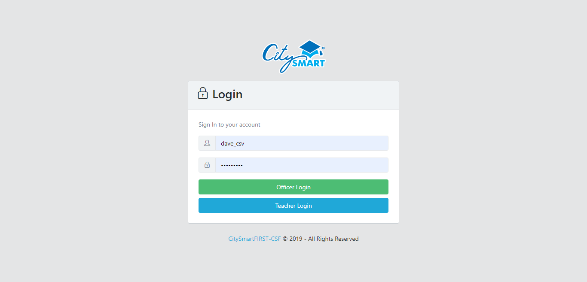{kind=link}
Thao tác:
Bước 1:
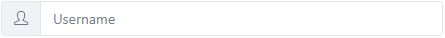{kind=link}
nhập tên tài khoản người dùng của bạn (ví dụ: admin_csv)
Bước 2:
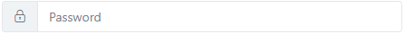{kind=link}
nhập Mật khẩu của bạn (có thể bao gồm chữ, số, ký tự đặc biệt, ví dụ: admin@123456)
Bước 3:
{kind=link}
Chọn tùy chọn này để đăng nhập nếu bạn là nhân viên văn phòng
Note
nếu tài khoản của bạn là tài khoản giáo viên, bạn sẽ không thể đăng nhập được với tùy chọn này
HOẶC
{kind=link}
Chọn tùy chọn này để đăng nhập nếu bạn là giáo viên
Note
nếu tài khoản của bạn là tài khoản nhân viên văn phòng, bạn sẽ không thể đăng nhập được với tùy chọn này
Trang chủ¶
Giao diện:

Thao tác:
Chọn Khung tương ứng với phần mềm bạn muốn sử dụng, bao g��m:
- Khung CSF: Chọn khung này nếu bạn muốn Truy cập danh mục Phần mềm CSF
{kind=link}
- Khung CMS: Chọn khung này nếu bạn muốn Truy cập danh mục Phần mềm CMS
{kind=link}
- Khung Live Report: Chọn khung này nếu bạn muốn Truy cập danh mục Live Report
{kind=link}
- Khung Hướng dẫn sử dụng: Chọn khung này 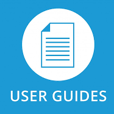 nếu bạn muốn Truy cập danh mục User Guide
{kind=link}
Phần mềm CSF¶
Giới thiệu phần mềm CSF¶
CSF – CITYSMART FIRST là phần mềm nội bộ được thiết kế và xây dựng bởi Công ty TNHH CITYSMART VIETNAM nhằm giúp người dùng quản lý quan hệ khách hàng, quản lý hệ thống trường học, và giao tiếp với các hệ thống khác, bao gồm:
- Marketing: hỗ trợ quản lý leads
- Telemarketing: hỗ trợ liên hệ với khách hàng và giới thiệu sản phẩm
- Admission: hỗ trợ quản lý, phân tích khách hàng, bán sản phẩm, và dịch vụ sau bán hàng
- Students: hỗ trợ quản lý học viên
- Classes: hỗ trợ quản lý lớp học
- Teachers: hỗ trợ quản lý giáo viên
- eInvoice: hỗ trợ quản lý Hóa đơn điện tử
- Reports: hỗ trợ vận hành hàng ngày với báo cáo được xây dựng theo yêu cầu
- Hệ thống: hỗ trợ thiết lập Hệ thống nhằm đáp ứng nhu cầu kinh doanh
Cơ bản¶
Thanh công cụ
Tùy vào vai trò và trách nhiệm của mỗi người dùng trong công ty mà sẽ thấy thanh công cụ, chức năng, và nội dung khác nhau, ví dụ:
- nếu vài trò của bạn liên quan đến nghiệp vụ của Marketing, bạn sẽ thấy:
{kind=link}
- nếu vài trò của bạn liên quan đến nghiệp vụ của Telemarketing, bạn sẽ thấy:
{kind=link}
- nếu vài trò của bạn liên quan đến nghiệp vụ của Admission, bạn sẽ thấy:
{kind=link}
và tương tự như vậy với các nhóm chức năng khác.
Tìm kiếm Tổng quát
Tìm thông tin khách hàng ở đâu:
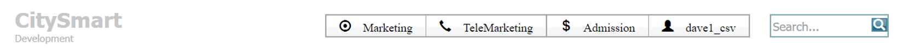{kind=link}
Khi bạn tìm kiếm thông tin khách hàng bằng cách nhập:
- Tên học viên (tối thiểu 4 ký tự)
- Số điện thoại Phụ huynh (tối thiểu 4 ký tự)
ví dụ: Nhập thông tin trong ô Tìm kiếm Tổng quát “Hoàng Phương Anh”
bạn sẽ thấy
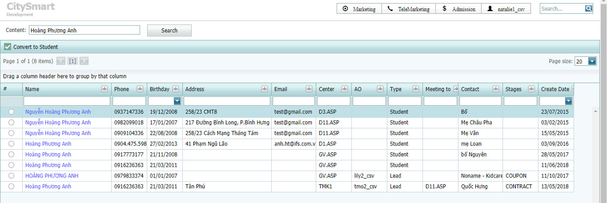{kind=link}
Note
Nếu không có kết quả trả về, thử tìm kiếm bằng cách nhập Số điện thoại Phụ huynh hoặc Tên học viên (có dấu/không dấu). Nếu vẫn không có kết quả thì thông tin Khách hàng không tồn tại trong hệ thống. Bạn có thể Tạo Lead mới.
Nếu kết quả trả về có cùng 1 thông tin nhưng 2 loại Lead và Student, chọn Tên học viên để tiếp tục công việc:
{kind=link}
{kind=link}
Tìm kiếm trên lưới dữ liệu (Grid Search)
Khi bạn Truy cập danh mục ở bất kỳ Module nào, trên thanh ch��c năng
{kind=link}
bạn sẽ thấy Grid Search 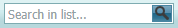
{kind=link}
Tip
Bạn có thể Nhập thông tin bạn muốn tìm sau hoặc trước khi lọc Nguồn, Thời gian, và Chọn Tìm kiếm . Dữ liệu sẽ được thể hiện trên lưới khớp với thông tin bạn muốn tìm.
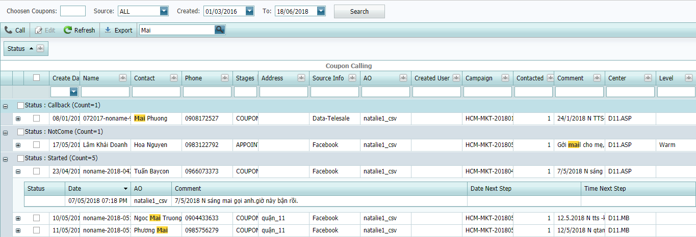{kind=link}
{kind=link}
Xem thông tin hiển thị
Tùy biến thông tin hiển thị
Marketing¶
1. Tạo chiến dịch Marketing (Marketing Campaign)¶
Bước 1: Truy cập danh mục Marketing > Danh sách chiến dịch trên thanh công cụ
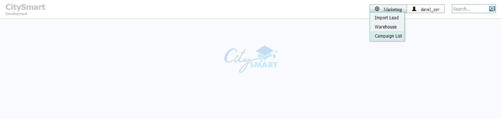{kind=link}
Bước 2: Chọn chức năng Tạo mới
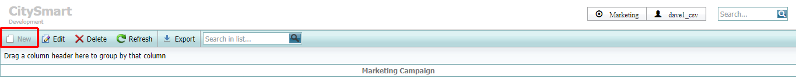{kind=link}
Note
Nếu bạn đã tạo chiến dịch rồi, Chọn chức năng Sửa  trên thanh chức năng để cập nhật thông tin.
trên thanh chức năng để cập nhật thông tin.
Nếu bạn muốn xóa chiến dịch đã tạo, Chọn chức năng Xóa 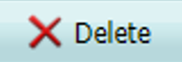 trên thanh chức năng. Bạn KHÔNG THỂ XÓA chiến dịch đã có thông tin Leads.
{kind=link}
Bước 3: Nhập thông tin vào các trường như hình bên dưới
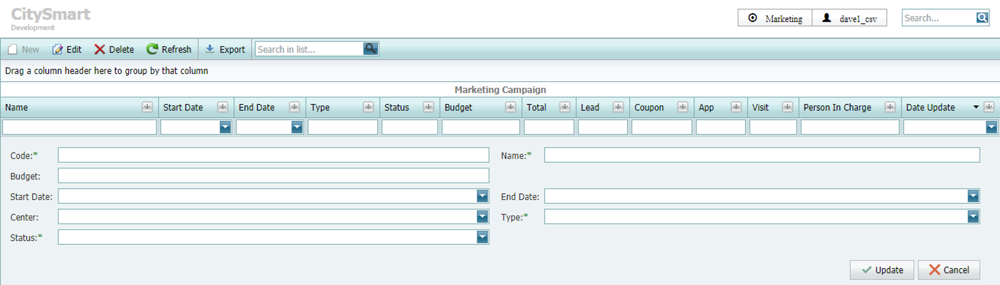{kind=link}
Note
- Mã*, Tên chiến dịch* (Code*, Name*): trường bắt buộc, bạn nên thống nhất và quy định cách đặt mã và tên chiến dịch để tất cả mọi người hiểu và dễ theo dõi.
- Ngân sách (Budget): nhập thông tin ngân sách kế hoạch của chiến dịch (VND)
- Ngày bắt đầu* (Start Date*): trường bắt buộc, Chọn ngày chiến dịch bắt đầu
- Ngày kết thúc* (End Date*): trường bắt buộc, Chọn ngày chiến dịch kết thúc
- Chi nhánh (Center): Chọn Chi nhánh bạn muốn chạy chiến dịch này
- Loại* (Type*): trường bắt buộc, Chọn School nếu bạn muốn chạy chiến dịch này tại Trung tâm HOẶC Chọn Telemarketing nếu bạn muốn chạy chiến dịch này bởi Telemarketing.
- Trạng thái* (Status*): trường bắt buộc, Chọn Trạng thái cho chiến dịch lần lượt Kế hoạch (Planning), Sẵn sàng (Ready), Đang chạy (InProgress), or Kết thúc (Finish) (Khi chọn trạng thái Kết thúc, người dùng không thể nhập thêm Lead mới vào chiến dịch này)
Tip
Đặt tên Chiến dịch Marketing (không bắt buộc):
- Chiến dịch cho Telemarketing: Nhập thông tin tên và mã chiến dịch theo mẫu HCM_TMK_201905_[Nguồn (Source)Name], ví dụ: HCM_TMK_201905_Webtretho; Chọn Loại “Telemarketing”.
- Chiến dịch cho Trung tâm: Nhập thông tin tên và mã chiến dịch theo mẫu HCM_MKT_201905_[Nguồn (Source)Name], ví dụ: HCM_MKT_201905_DigitalA; Chọn Loại “School”.
- Chiến dịch cho Local: Nhập thông tin tên và mã chiến dịch theo mẫu HCM_Local_201905_[Nguồn (Source)Name], ví dụ: HCM_Local_201905_M03-Activation; Chọn Loại “School”
Bước 4: Chọn Cập nhật
2. Nhập leads vào chiến dịch¶
Bước 1: Truy cập danh mục Marketing > Import Lead trên thanh công cụ
Bước 2: Tải xuống Mẫu SP_AddLeadList để nhập Leads
{kind=link}
Bước 3: nhập thông tin Leads vào mẫu
Warning
KHÔNG XÓA hàng 1 - 5, Hoặc bất kỳ cột, Hoặc thay đổi định dạng trong tập tin mẫu.
Note
- Học viên (Name): nhập tên học viên (nếu có), nếu không có nhập noname-yyyy-mmdd-01 ví dụ: noname-2019-0510-01
- Điện thoại liên hệ (Phone): nhập Số điện thoại (bắt buộc 10 số, không khoảng cách, không chứa ký tự đặc biệt) ví dụ: 0123456789
- Tên người liên hệ (Contact Name): nhập tên người liên hệ (nếu có) nhập “noname” (nếu không có)
- Kênh (SOF): nhập thông tin nguồn Khách hàng (ví dụ: Banner ad, billboard, Email, v.v…)
- Chi nhánh (Division): nhập Mã Chi nhánh (Division Code) được đặt tên “MaCN” trong mẫu (ví dụ: D3.ASP = 110, D3.MB = 111, etc.)
- Account Owner (AO): nhập tên người dùng (username) (cấp độ quản lý / giám sát)
- Giới tính (Gender): 1 = Nam, 0 = Nữ (nếu chưa xác định, nhập Tất cả là 1 hoặc 0)
Bước 4: Chọn Marketing Campaign mà bạn đã tạo trước đó tại Marketing/Import Lead
See also
Bước 5: Tải lên mẫu SP_AddLeadList bạn vừa nhập thông tin Leads
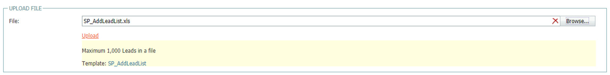{kind=link}
Note
you có thể Chọn mẫu để tải lên bằng cách chọn Browse 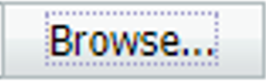 or kéo và thả tập tin mẫu từ màn hình máy tính của bạn vào khung Upload File Area
{kind=link}
Bước 6: Chọn Submit để hoàn tất quá trình nhập Leads
Warning
Trong quá trình tải dữ liệu, KHÔNG ĐƯỢC TẮT Phần mềm CSF dưới bất kỳ hoàn cảnh nào. Mặc dù quá trình tải dữ liệu vẫn diễn ra, nhưng sẽ không có kết quả trả về.
Bước 7: Kiểm tra Kết quả nhập Leads
Sau khi hoàn tất quá trình tải dữ liệu Leads lên hệ thống, kết quả sẽ được trả về với mẫu LeadImport có giao diện như hình bên dưới
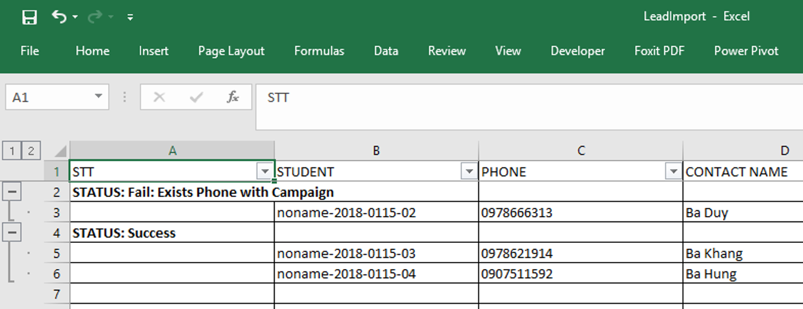{kind=link}
Note
kết quả trả về thể hiện thông tin số Leads nhập thành công, Leads nào thất bại và lý do tại sao.
Bước 8: Kiểm tra Leads đã được nhập (Imported Leads) tại Marketing > Warehouse
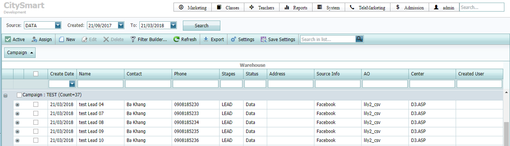{kind=link}
Note
Chọn Nguồn (Nguồn (Source)) = “DATA”, Tạo ngày (Created) = “Khoảng-thời-gian-bạn-muốn-xem”
3. Phân chia leads cho Telemarketing / Admission¶
Bước 1: Truy cập danh mục Marketing > Warehouse trên thanh công cụ
Bước 2: Lọc Nguồn (Source) = “DATA”, Ngày tạo (Created) = “Khoảng-thời-gian-bạn-muốn-xem”, sau đó Chọn Tìm kiếm (Search)
Bước 3: Đánh dấu chọn 1 hoặc nhiều Leads or toàn bộ Chiến dịch để phân, sau đó Chọn Kích hoạt 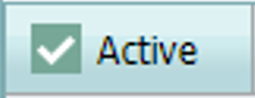
{kind=link}
Note
thông tin chi nhánh (Division) & người sở hữu (AO) đã được nhập trong mẫu SP_AddLeadList nên bạn chỉ cần chọn leads bạn muốn phân và Chọn .
Để chọn Leads bạn có thể:
- Chọn MỘT Lead bằng cách Đánh dấu ô chọn của Lead trên lưới dữ liệu
- Chọn TẤT CẢ Leads trong chiến dịch bằng cách đánh dấu ô chọn chiến dịch trên lưới dữ liệu
- Chọn NHIỀU Leads trong chiến dịch (hoặc khác chiến dịch) bằng cách đánh dấu các ô chọn mong muốn HOẶC sử dụng chuột và tổ hợp phím (Chuột trái chọn Lead đầu tiên, sau đó giữ phím Shift + nhấp chuột trái Chọn Lead cuối cùng)
4. Kiểm tra Tiến trình khai thác Leads theo chiến dịch Marketing¶
Bước 1: Truy cập danh mục Marketing > Campaign List trên thanh công cụ
Bước 2: Lọc Chiến dịch hoặc bất kỳ hoặc bất kỳ loại thông tin nào bạn muốn xem trên lưới
Note
Trên lưới dữ liệu bạn sẽ thấy:
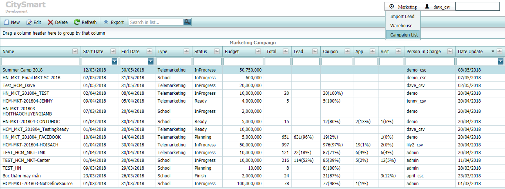{kind=link}
- Tên (Name): Tên chiến dịch
- Ngày bắt đầu (Start Date): Ngày bắt đầu chiến dịch
- Ngày kết thúc (End Date): Ngày kết thúc chiến dịch
- Loại (Type): Chiến dịch cho Telemarketing hoặc School
- Trạng thái (Status): Trạng thái hiện tại của chiến dịch
- Ngân sách (Budget): Ngân sách kế hoạch của chiến dịch
- Tổng (Total): Tổng số Leads được nhập vào chiến dịch
- Lead: Tổng số Leads hiện tại chưa được phân về cho TMK / Admission
- Coupon: Tổng số Leads hiện tại đang ở giai đoạn COUPON
- App: Tổng số Leads hiện tại đang ở giai đoạn APPOINTMENT
- Visit: Tổng số Leads hiện tại đang ở giai đoạn VISIT
- Person in charge: Người tạo chiến dịch
- Date Update: Ngày tạo / cập nhật chiến dịch
5. Kiểm tra chi tiết vận hành theo chiến dịch¶
Bước 1: Truy cập danh mục Marketing > Warehouse trên thanh công cụ
Bước 2: Lọc Nguồn (Source) = “Tất cả”, Ngày tạo (Created) = “Khoảng-thời-gian-bạn-muốn-xem”, Chọn Tìm kiếm (Search)
Bước 3: Kéo và thả cột tiêu đề vào khung để nhóm thông tin
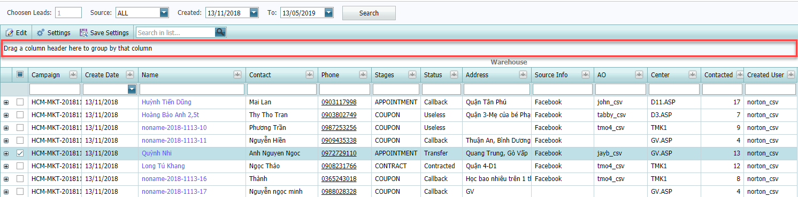{kind=link}
{kind=link}
See also
Telemarketing¶
1. Phân chia Leads mới nhận từ Marketing (Assign Leads)¶
Bước 1: Truy cập danh mục Telemarketing > Coupon Assigning trên thanh công cụ
Bước 2: Lọc Nguồn (Source) = “Ngày tạo (Created)”, Ngày tạo (Created) = “Khoảng-thời-gian-bạn-muốn-xem”, Chọn Tìm kiếm (Search)
Bước 3: Lọc Leads bạn muốn phân chia theo chiến dịch (tùy nhu cầu)
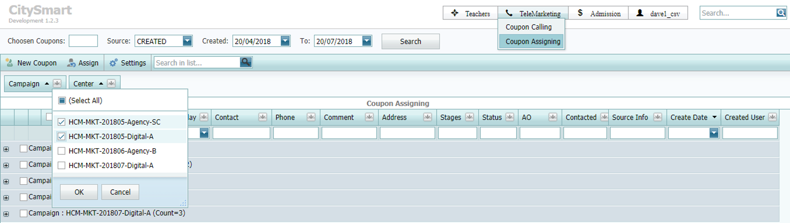{kind=link}
Bước 4: Chọn Leads bạn muốn phân sau khi lọc ở Bước 3
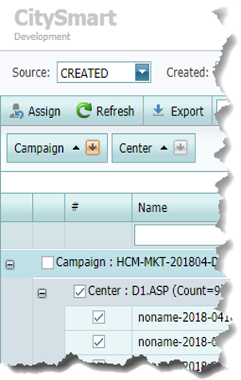{kind=link}
Warning
Bạn PHẢI kiểm tra tổng số Coupons bạn đã chọn trước khi phân để đảm bảo bạn đã chọn đúng.
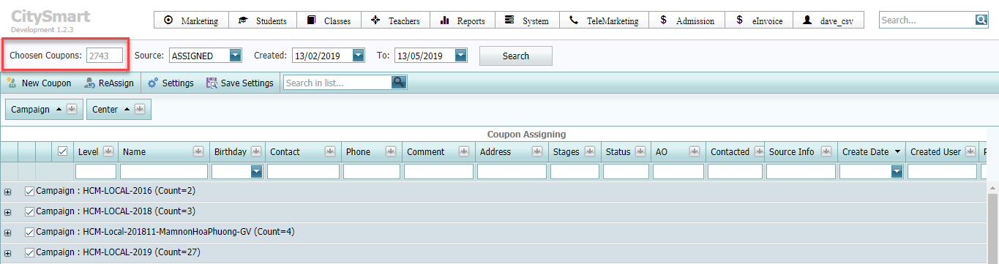{kind=link}
Bước 5: Chọn Assign 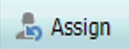
{kind=link}
Bước 6: Nhập thông tin Tên tài khoản mà bạn muốn phân trên cửa sổ pop-up
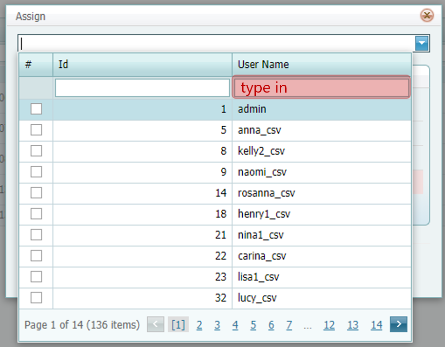{kind=link}
Bước 7: Kiểm tra danh sách Tên tài khoản bạn muốn phân, tổng số Leads phân cho từng tài khoản, sau đó Chọn OK
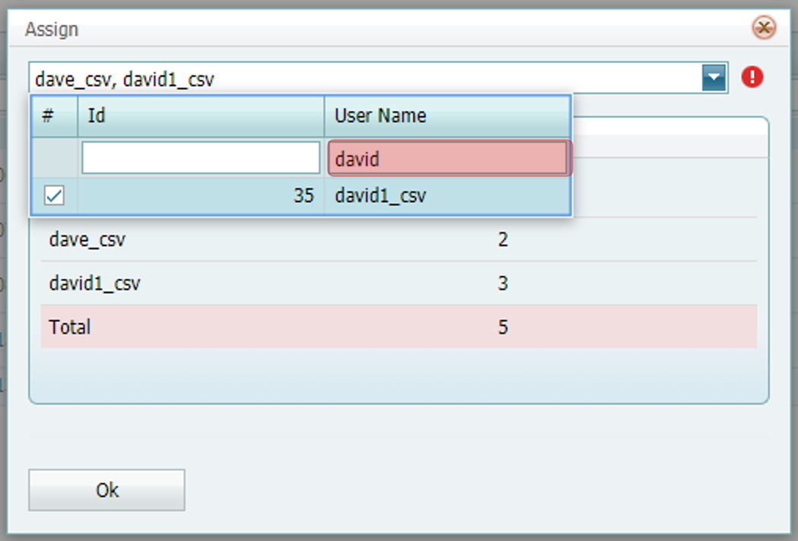{kind=link}
Note
Tổng số Leads sẽ được chia đều cho tất cả tài khoản được chọn.
Ví dụ: Nếu có tổng cộng 301 Leads, và bạn muốn phân cho 3 tài khoản “A”, “B’, “C”, lần lượt:
- “A” sẽ tự động được chia 100 leads
- “B” sẽ tự động được chia 100 leads
- “C” sẽ tự động được chia 101 leads
Khi bạn hoàn tất việc phân Coupons, trạng thái của Lead sẽ được cập nhật từ “Created” to “Started”. Kể từ lúc này, người dùng có thể xem được những Leads được phân và bắt đầu gọi điện.
2. Phân lại Leads (Reassign Leads)¶
Bước 1: Truy cập danh mục Telemarketing > Coupon Assigning trên thanh công cụ
Bước 2: Lọc Nguồn (Source) = “ASSIGNED”, Ngày tạo (Created) =”Khoảng-thời-gian-bạn-muốn-xem”, Chọn Tìm kiếm (Search)
Bước 3: Phân lại Leads tương tự như đã thực hiện từ Bước 3 - 7 trong phần hướng dẫn `Assign Leads`_
Note
Khi b���n phân lại Leads, trạng thái của Leads sẽ được cập nhật lại như sau:
- COUPON: Trạng thái được cập nhật thành “Started”
- APPOINTMENT: Trạng thái không thay đổi (ví dụ: Nếu Lead A có Trạng thái is “Callback”, khi bạn phân lại Lead, trạng thái của Lead vẫn là “Callback”.
- VISIT, CONTRACT: Không thể phân lại
3. Kiểm traTrạng thái Lead trong Telemarketing¶
Bước 1: Truy cập danh mục Telemarketing > Coupon Assigning trên thanh công cụ
Bước 2: Lọc Nguồn (Source) = “Tất cả”, Ngày tạo (Created) =”Khoảng-thời-gian-bạn-muốn-xem”, Chọn Tìm kiếm (Search)
Bước 3: Nhóm loại thông tin và lọc STAGES và STATUS bạn muốn xem
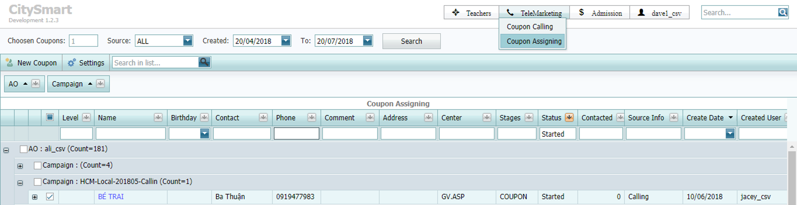{kind=link}
4. Tạo Lead mới (Create Lead)¶
Bước 1: Truy cập danh mục Telemarketing > Coupon Assigning trên thanh công cụ
Bước 2: Chọn New Coupon 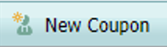
{kind=link}
Bước 3: Nhập thông tin vào cửa sổ pop-up (* : trường bắt buộc)
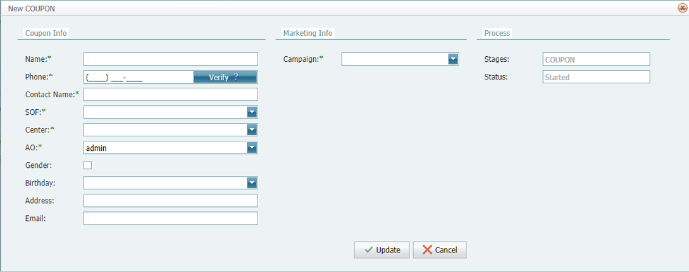{kind=link}
Note
Nút chức năng Verify dùng để kiểm tra Lead đã tồn tại trên hệ thống hay chưa. Bạn chỉ có thể tạo Coupon mới nếu chưa tồn tại trên hệ thống.
- Exist: ô dữ liệu số điện thoại sẽ chuyển thành Yellow 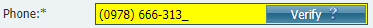
- Not Exist: ô dữ liệu số điện thoại sẽ chuyển thành Green 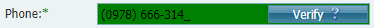
{kind=link}
{kind=link}
Tùy thuốc vào SOF của Leads, bạn cần chọn đúng nguồn và thông tin chiến dịch (Ví dụ: Facebook, website, v.v..)
Bước 4: Chọn Cập nhật
5. Gọi điện, ghi nhận lịch sử công việc và đặt lịch tương tác mới với Lead¶
Tình huống 1: Gọi tất cả Lead mới được phân¶
Bước 1: Truy cập danh mục Telemarketing > Coupon Calling trên thanh công cụ
Bước 2: Lọc Nguồn (Source) = “STARTED”, Ngày tạo (Created) Date |Ngày tạo (Created)date|, From - To = “Days-Leads-are-Ngày tạo (Created)”, Chọn Tìm kiếm (Search)
Tip
Coupon Calling được thiết kế nhằm hỗ trợ người dùng thuộc bộ phận Telemarketing thực hiện công việc gọi điện hàng ngày:
- Lọc Nguồn (Source)=”STARTED”, Chọn *Ngày tạo (Created) Date, From-To: để gọi những Lead được phân gần đây.
- Lọc Nguồn (Source)=”ALL”, Chọn “Lịch gọi kế tiếp (Next Scheduler)”, From-To: để gọi cho tất cả leads mà bạn đã lên lịch gọi.
Bước 3: Chọn Leads để gọi (Một Lead, Một vài Leads, hoặc Tất cả Leads), Chọn Calling
{kind=link}
bạn sẽ thấy this screen:
- Total: Tổng số Leads bạn muốn chọn để Gọi (Call)

- Current: Số thứ tự của Lead hiện tại bạn đang gọi
{kind=link}
- Time: Thời gian cuộc gọi hiện tại
{kind=link}
- Lead Detail: thông tin chi tiết của Lead
{kind=link}
Note
Bạn có thể Sửa và Lưu thay đổi (Save changes) thông tin chi tiết của Lead với các mục sau:
- Name: Tên học viên
- Birthday: Ngày sinh học viên
- Sex: Giới tính học viên Name / Nữ
- Contact: Tên người liên hệ (tên ba / tên mẹ / tên ông / tên bà, etc.)
- Phone: Số điện thoại chính của người liên hệ
- Phone 2: Số điện thoại phụ của người liên hệ
- Address: Địa chỉ người liên hệ
- Email: Email người liên hệ
- Notes: Ghi chú liên quan đến học viên / người liên hệ, không phải ghi chú thông tin cuộc gọi (ví dụ: bé còn nhỏ, nhút nhát, cần chú ý hơn, hoặc bé bị dị ứng phấn hoa, v.v…)
- Stage: Giai đoạn hiện tại của Lead (LEAD / COUPON / APPOINTMENT / VISIT / CONTRACT)
You KHÔNG THỂ SỬA Số điện thoại chính người liên hệ & Giai đoạn hiện tại của Lead.
- Ghi nhận thông tin cuộc gọi:
{kind=link}
- Lịch sử tương tác khách hàng:
{kind=link}
Note
Khi bạn chọn , phần mềm 3CX sẽ tự khởi động để thực hiện cuộc gọi đến Leads đã chọn. (vui lòng liên hệ bộ phận IT Office tại công ty nếu xảy ra sự cố liên quan đến 3CX)
Giao diện 3CX:
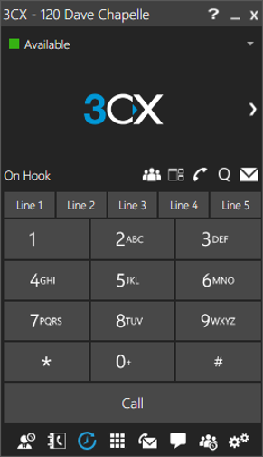{kind=link}
Bước 4: Ghi nhận thông tin cuộc gọi và chọn Action kế tiếp với Lead
Callback (Hẹn gọi lại):
- Lý do (Reason): Chọn lý do phù hợp để gọi lại (Callback) (Không bắt máy (Not Answer), Bận (Busy), Cân nhắc (Consider), Quan tâm (Interested), Không quan tâm (Not Interested))
- Mức độ tiềm năng (Potential Level): đánh giá mức độ tiềm năng của khách hàng (Hot, Warm, Cold, Forecast)
- Chương trình (Program): Chọn chương trình học tại trường mà phụ huynh muốn đăng ký cho con
- Ghi chú (Note): Nhập thông tin ghi chú cuộc gọi hiện tại
- Lịch gọi kế tiếp (Schedule): Chọn ngày gọi lại cho khách hàng
Meeting (Đặt lịch hẹn):
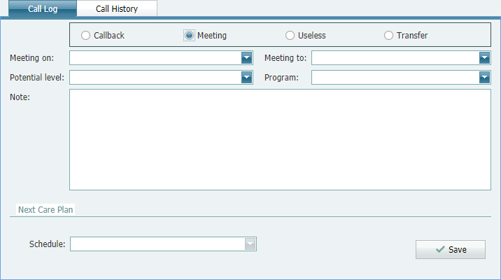- Thời gian cuộc hẹn (Meeting on): Chọn ngày giờ bạn đặt cuộc hẹn với khách hàng
- Địa điểm cuộc hẹn (Meeting to): Chọn địa điểm ban hẹn với khách hàng
- Mức độ tiềm nằng (Potential Level): đánh giá mức độ tiềm năng của khách hàng (Hot, Warm, Cold, Forecast)
- Chương trình (Program): Chọn chương trình học tại trường mà phụ huynh muốn đăng ký cho con
- Ghi chú (Note): Nhập thông tin ghi chú cuộc gọi hiện tại
- Lịch gọi kế tiếp (Schedule): Chọn ngày gọi lại cho khách hàng
Useless (Không sử dụng được):
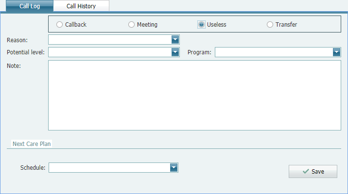- Reason: Chọn lý do phù hợp cho trạng thái Useless (Sai độ tuổi (Wrong Age), Sai khu vực (Wrong Location), Sai số (Wrong Number))
Transfer (Chuyển trung tâm):
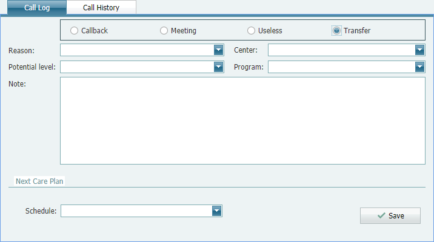- Reason: Chọn reason “Transfer Chi nhánh”
- Chi nhánh: Chọn Chi nhánh you want to transfer to
- Potential Level: evaluate customer potential level (Hot, Warm, Cold)
- Program: Chọn School Program that Parents want to enroll their students in
- Note: Nhập thông tin current call notes
- Schedule: Chọn Next Care Plan to callback
{kind=link}
{kind=link}
{kind=link}
{kind=link}
{kind=link}
6. Gửi tin nhắn SMS trong phân hệ Telemarketing¶
Bước 1: Truy cập danh mục Telemarketing > Coupon calling trên thanh công cụ
Bước 2: Filter Nguồn (Source) = “Tất cả”, Ngày tạo (Created) Date, From - To = “Days-Leads-are-Ngày tạo (Created)”, Chọn Tìm kiếm (Search)
Bước 3: Chọn MỘT Lead bạn muốn gửi tin nhắn, nhấp chuột phải, Chọn SMS 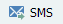
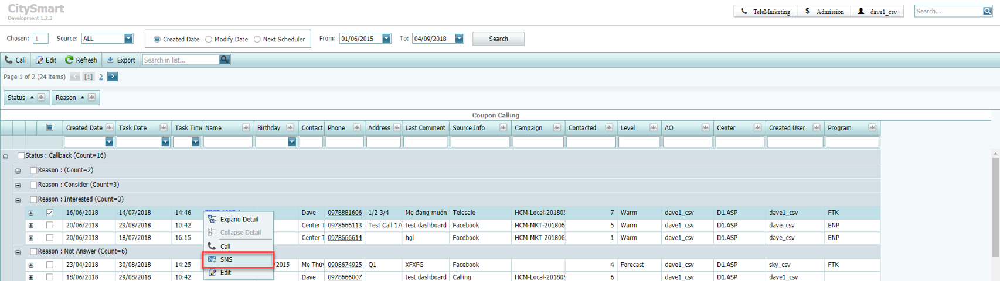{kind=link}
{kind=link}
Bước 4: Chọn SMS Brandname, Send to (Số điện thoại), SMS Template (mẫu tin nhắn), Nhập nội dung tin nhắn, Chọn mức độ tiềm năng.
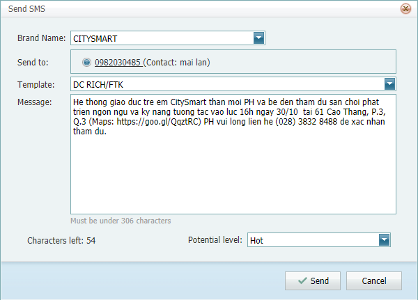{kind=link}
{kind=link}
Note
Sẽ có thông báo từ hệ thống cho bạn biết tin nhắn được gửi đi Thành công hoặc Thất bại (kèm lý do).
Bước 6: Kiểm tra trạng thái gửi SMS Thành công (Successfully) or Thất bại (Failed)
{kind=link}
7. Kiểm tra tóm tắt kết quả bán hàng (sale performance)¶
Bước 1: Truy cập danh mục Telemarketing > Sale Performance trên thanh công cụ
Bước 2: Lọc dữ liệu muốn xem theo “Ngày (Day)” / “Tuần (Week)” / “Tháng (Month)” / “Thời gian (From-To)”, Chọn Tìm kiếm (Search)
Giao diện:
{kind=link}
Note
Diễn giải kết quả bán hàng (sale performance):
- User: Tên tài khoản nhân viên bán hàng trên hệ thống
- Fullname: Họ và tên của nhân viên bán hàng
- User Center: Chi nhánh làm việc của nhân viên
- Call: Tổng số cuộc gọi nhân viên đã thao tác và lưu thông tin trên hệ thống (gọi đặt hẹn cũng được tính là một cuộc gọi)
- Appointment: Tổng số cuộc hẹn nhân viên đã thao tác và lưu thông tin trên hệ thống
- Appointment.Come: Tổng số cuộc hẹn đã tới của nhân viên
- Visit: Tổng số Khách hàng đã tới trung tâm (không có cuộc hẹn (Appointment))*
- Contract: Tổng số Hợp đồng mà nhân viên thao tác trên hệ thống (Convert)
Nếu bạn muốn xem chi tiết của từng user, Chọn expand :
{kind=link}
{kind=link}
- Theo dõi chi tiết tương tác với Khách hàng (Lead Activity Tracker)
Bước 1: Truy cập danh mục Telemarketing > Lead Activity Tracker trên thanh công cụ
Bước 2: Lọc dữ liệu bạn muốn xem theo Ngày (Day) / Tuần (Week)” / Tháng (Month) / Thời gian (From-To), Chọn Tìm kiếm (Search)
Ví dụ: Hôm nay là ngày 13/05/2019, Tên tài khoản của bạn là “annth_csv”, bạn muốn theo dõi lịch sử tương tác của bạn trong hôm nay, lọc dữ li���u “Day” = Today(), Chọn Tìm kiếm (Search),
Giao diện:
{kind=link}
Phân hệ Admission¶
1. Theo dõi cuộc hện tại trường (Appointments)¶
Bước 1: Truy cập danh mục Admission > Appointments trên thanh công cụ
Bước 2: Lọc Cuộc hẹn (Appointment) = “Khoảng-thời-gian-bạn-muốn-xem”, Chọn Tìm kiếm (Search)
Giao diện:
{kind=link}
Ví dụ:
Vào ngày 13/05/2019, có tổng cộng 26 cuộc hẹn (appointments) tại Chi nhánh Quận 11 [Cột Meeting at], được đặt bởi [AO], được xác nhận đến trung tâm bởi [Follow]Ngoài ra, bạn sẽ thấy thêm một số thông tin khác như: Giờ hẹn (Meeting Time), Tên học viên (Student Name), Tên người liên hệ (Contact Name), Số điện thoại người liên hệ (Phone), Ghi chú cuộc hẹn (Meeting Notes), Nội dung tương tác (Action Comments), v.v…
2. Gọi xác nhận cuộc hẹn (Appointment)¶
Bước 1: Truy cập danh mục Admission > Appointments trên thanh công cụ
Bước 2: Lọc Cuộc hẹn (Appointment) = “Khoảng-thời-gian-bạn-muốn-xem”, Chọn Tìm kiếm (Search)
Bước 3: Chọn MỘT Lead bạn muốn gọi Xác nhận, Chọn Gọi (Call)
Bước 4: Nhập nội dung tương tác cuộc gọi, sau đó Chọn Lưu |save|
{kind=link}
3. Xác nhận Come / Not Come cho Cuộc hẹn tại trường (Appointment)¶
Bước 1: Truy cập danh mục Admission > Appointments trên thanh công cụ
Bước 2: Lọc Cuộc hẹn (Appointment) = “Khoảng-thời-gian-bạn-muốn-xem”, Chọn Tìm kiếm (Search)
Bước 3: Chọn MỘT Lead bạn muốn Xác nhận Đến (Come) / Không đến (Not Come), Chọn Come or Not Come
{kind=link}
{kind=link}
Bước 4: Nhập Nội dung xác nhận (Note), Chọn Mức độ tiềm năng (Potential Level), sau đó Chọn Lưu |save|
Khi Xác nhận Come , bạn sẽ thấy:
{kind=link}
When you Xác nhận Not Come , bạn sẽ thấy:
{kind=link}
Note
Nhân viên Xác nhận Come sẽ là người tiếp tục Follow khách hàng tại trung tâm [VISIT > CONTRACT]. Nếu muốn phân lại cho nhân viên khác, sử dung chức năng Refollow trong màn hình Lead List.
Khi Chọn Xác nhận Not Come , chỉ có Trạng thái cuộc hẹn (Appointment Status) được cập nhật lại thành NotCome
Warning
Người dùng PHẢI Xác nhận Come or Not Come TRONG 24H KỂ TỪ NGÀY HẸN.
4. Gửi tin nhắn SMS trong màn hình Appointments¶
Bước 1: Truy cập danh mục Admission > Appointments trên thanh công cụ
Bước 2: Lọc Cuộc hẹn (Appointment) = “Khoảng-thời-gian-bạn-muốn-xem”, Chọn Tìm kiếm (Search)
Bước 3: Chọn MỘT Lead bạn muốn gửi tin nhắn SMS, sau đó Chọn SMS trên thanh công cụ
{kind=link}
Bước 4: Chọn Thương hiệu (Brandname), Số điện thoại (Phone), Mẫu tin nhắn (Template), nhập Nội dung tin nhắn (Message), Chọn Mức độ tiềm năng (Potential level)
Note
Sẽ có thông báo từ hệ thống cho bạn biết tin nhắn được gửi đi Thành công hoặc Thất bại (kèm lý do).
Bước 6: Kiểm tra trạng thái gửi SMS Thành công (Successfully) or Thất bại (Failed)
5. Tạo cuộc hẹn mới sau khi xác nhận Not Come (Appointment) trong màn hình Appointments¶
Sau khi Xác nhận Not Come và nhập ghi chú, bạn muốn đặt cuộc hẹn khác:
Bước 1: Chọn Lead bạn vừa xác nhận Không tới (Not Come) .
Bước 2: Chọn Cuộc hện mới (New Appointment) trên thanh công cụ
{kind=link}
Bước 3: Chọn Schedule [Thời gian], Meeting to [Địa điểm], nhập Note, Chọn Potential Level cho cuộc hẹn mới, sau đó Chọn Lưu |save|
6. Theo dõi danh sách Khách hàng đã đến / đã tạo hợp đồng tại trường (VISIT và CONTRACT)¶
Bước 1: Truy cập danh mục Admission > Lead List trên thanh công cụ
Bước 2: Lọc Ngày tạo (Created) Date - To = “Ngày tạo Lead (Created) từ-ngày-đến-ngày”, sau đó Chọn Tìm kiếm (Search)
Bước 3: Nhóm các cột thông tin bạn muốn theo dõi
Ví dụ: Tôi muốn xem có bao nhiêu Khách hàng đã tới trung tâm và chưa ký hợp đồng cùng mức độ tiềm năng của Khách hàng:
{kind=link}
7. Tạo mới Khách hàng đến trung tâm (New Visit)¶
Bước 1: Truy cập danh mục Admission > Lead List trên thanh công cụ
{kind=link}
Bước 3: nhập thông tin đầy đủ (* : trường bắt buộc)
{kind=link}
Note
Chức năng Kiểm tra (Verify) dùng để kiểm tra xem thông tin khách hàng đã có trên hệ thống hay chưa. Bạn chỉ có thể tạo mới thông tin khi Khách hàng chưa tồn tại trên hệ thống.
- Tồn tại (Exist): Khung số điện thoại sẽ hiện màu Vàng
- Chưa tồn tại (Not Exist): Khung số điện thoại sẽ hiện màu Xanh
Tùy vào nguồn thông tin mà khách hàng biết đến trường, bạn cần chọn đúng thông tin nguồn và Chiến dịch (Facebook, Website, etc.)
Bước 4: Chọn Cập nhật
8. Phân lại Khách hàng đã tới trung tâm (Refollow Lead)¶
Bước 1: Truy cập danh mục Admission > Lead List trên thanh công cụ
Bước 2: Lọc Ngày tạo (Created) =”Ngày-tạo-Lead (Created)”, Chọn Tìm kiếm (Search)
Bước 3: Chọn Lead bạn muốn phân lại (refollow), sau đó Chọn Refollow
{kind=link}
{kind=link}
Bước 4: Chọn Follow User
Bước 5: Chọn Cập nhật
8. Theo dõi danh sách Khách hàng cá nhân (Follow Up personal Leads)¶
Trường hợp 1: Theo dõi theo lịch hẹn chăm sóc kế tiếp (Next Scheduler)¶
Bước 1: Truy cập danh mục Admission > Follow-Up trên thanh công cụ
Bước 2: Chọn Lịch chăm sóc kế tiếp (Next Scheduler), Lọc From-To = “Từ-ngày-đến-ngày”, sau đó Chọn Tìm kiếm (Search)
Tip
nếu bạn muốn kiểm tra danh sách khách hàng cần phải gọi lại trong hôm nay, Chọn Next Scheduler, lọc From-To = Hôm nay (Today), Chọn Tìm kiếm . Kiểm tra thông tin khách hàng và lựa chọn Khách hàng bạn muốn chăm sóc.
Bước 3: Chọn Gọi (Call) to `Gọi điện, lưu thông tin cuộc gọi và đặt lịch chăm sóc kế tiếp`_
Note
Bạn nên đợi khách hàng dừng cuộc gọi trước, sau đó Chọn Save . Vì cuộc gọi sẽ tự động kết thúc và chuyển sang thực hiện cuộc gọi cho khách hàng tiếp theo trong danh sách khi bạn chọn Lưu (Save) |save| .
Trường hợp 2: Theo dõi danh sách khách hàng theo mục đích riêng¶
Bước 1: Truy cập danh mục Admission > Follow-Up trên thanh công cụ
Bước 2: Chọn Ngày tạo (Created), filter From-To = “Từ-ngày-đến-ngày (Created)”, sau đó Chọn Tìm kiếm (Search)
Bước 3: Chọn Gọi (Call) to `Gọi điện, lưu thông tin cuộc gọi và đặt lịch chăm sóc kế tiếp`_
Note
Bạn nên đợi khách hàng dừng cuộc gọi trước, sau đó Chọn Save . Vì cuộc gọi sẽ tự động kết thúc và chuyển sang thực hiện cuộc gọi cho khách hàng tiếp theo trong danh sách khi bạn chọn Lưu (Save) |save| .
Phân hệ Lớp học (Classes)¶
1. Xem thông tin lịch lớp học tại trường (Class Scheduler)¶
Bước 1: Truy cập danh mục Classes > Class Scheduler trên thanh công cụ
Bước 2: Chọn Chi nhánh (Center) và Chương trình (Program) bạn muốn xem, Chọn Tìm kiếm (Search)
{kind=link}
{kind=link}
Note
Lịch lớp học (Class Scheduler) mặc định sẽ là trong vòng 3 tháng (Tháng trước + Tháng hiện tại + Tháng kế tiếp). nếu bạn muốn change Date range, expvà Advance Filter và Chọn Date Range as you want.
{kind=link}
Bước 3: Xem thông tin lịch lớp học (Class Scheduler)
{kind=link}
{kind=link}
{kind=link}
{kind=link}
{kind=link}
{kind=link}
{kind=link}
2. Tìm kiếm lớp học (Search Class)¶
Bước 1: Truy cập danh mục Classes > Class List trên thanh công cụ
Bước 2: Lọc Ngày lớp bắt đầu (Start Date - To) = “Lớp-bắt-đầu-từ-ngày-đến-ngày”, sau đó Chọn Tìm kiếm (Search)
{kind=link}
Bước 3: Nhập thông tin Tên lớp học (Class Name) bạn muốn tìm, ví dụ: Nhập thông tin “2B-1807”
{kind=link}
Tip
Bạn có thể tìm kiếm bất kỳ thông tin nào bạn muốn trong danh sách lớp (tên lớp, chương trình, v.v…)
3. Kiểm tra thông tin chi tiết lớp (Class Details)¶
Bước 1: `Tìm lớp (Search Class)`_
Bước 2: Chọn Class ID trong kết quả trên màn hình danh sách lớp
Bước 3: Kiểm tra thông tin chi tiết lớp (Class Details)
4. Phân Giáo viên vào lớp (Assign Teacher)¶
Bước 1: `Tìm lớp (Search Class)`_
{kind=link}
bạn sẽ thấy màn hình phân giáo viên:

Bước 3: Chọn Add nếu bạn muốn phân Giáo viên chính và Trợ giảng chính vào lớp
{kind=link}
Bước 4: Trong màn hình Thêm Giáo viên vào lớp (Add Teacher), Tìm Teacher Name trong khung tìm kiếm, kiểm tra Thông tin Giáo viên, sau đó Chọn Thêm vào lớp (Add)
{kind=link}
{kind=link}
Note
Hệ thống sẽ kiểm tra tính sẵn sàng của Giáo viên (Teacher Availabilty) khi bạn Chọn Add or Cover . If you don’t see the teacher you are looking for, it means the teacher is busy with the class schedule you are working on.
{kind=link}
Bước 5: Trong mục Thông tin đăng ký giáo viên (Enrollment Information), nhập đầy đủ thông tin bao gồm:
- Là Trợ giảng (Is Assisstant Teacher):
{kind=link}
Note
Đánh dấu ô này nếu vài trò của giáo viên là Trợ giảng chính. Nếu là vai trò là Giáo viên chính, KHÔNG đánh dấu chọn ô này.
- Giờ cộng thêm (Extra Rate):
{kind=link}
Note
Nhập số giờ cộng thêm cho giáo viên (hours: 0.5, 1, 1.5, 2, v.v…) tùy vào số giờ cộng thêm thực tế của Giáo viên khi đứng lớp.
- Chọn số buổi học mà giáo viên đăng ký dạy (Choose Lessons):
{kind=link}
Tip
You can filter lessons to Chọn quickly. For ví dụ: Class Schedule is on Saturday & Sunday (48 lessons), the teacher only teaches 24 lessons on every Saturday, you can quickly Chọn as below:
{kind=link}
sau đó check Total Lessons chosen for teacher, bạn sẽ thấy there are 24 lesons (on Saturdays)
{kind=link}
Bước 6: Chọn OK
Bước 7: Kiểm tra kết quả Giáo viên trong lớp (Teacher In Class)
{kind=link}
Note
Giáo viên trong lớp | Diễn giải mã màu
{kind=link}
- Không có trong lớp (Notin): Giáo viên không có đăng ký dạy trong lớp vào ngày đó
- Có trong lớp (In): Giáo viên có đăng ký dạy trong lớp vào ngày đó
- Dạy thế (Cover): Giáo viên dạy thế vào ngày đó
- Xin nghỉ có người dạy thế (BeCovered): Giáo viên nghỉ có xếp lịch dạy thế vào ngày đó
Note
nếu bạn muốn đăng ký giáo viên dạy thế trong lớp, vui lòng thực hiện các bước sau:
Bước 1: `Search Class`_
Bước 2: Chọn Đăng ký giáo viên (Assign Teacher)
bạn sẽ thấy cửa sổ đăng ký giáo viên:
Bước 3: Chọn Đăng ký dạy thế (COVER)
Bước 4: Tìm giáo viên dạy thế trong khung tìm kiếm
{kind=link}
Bước 5: Chọn Đăng ký Giáo viên (Assign Teacher)
Bước 6: Trong cửa sổ Thêm giáo viên dạy thế (Add Cover Teacher), Chọn Giáo viên được dạy thế:

Bước 7: nhập thông tin giờ dạy áp dụng cho Giáo viên dạy thế

Bước 8: Chọn OK
Bước 9: Kiểm tra kết quả đăng ký giáo viên dạy thế .. image:: _static/images/coverteacherresult.png
width: 400pt
5. Sửa giờ dạy Giáo viên trong lớp (Edit Teacher in Class)¶
Bước 1: `Tìm lớp (Search Class)`_
Bước 2: Chọn Đăng ký giáo viên (Assign Teacher)
Bước 3: Trong cửa sổ Đăng ký giáo viên (Assign Teacher), Chọn Sửa
{kind=link}

Bước 4: Tìm và chọn thông tin bạn muốn sửa, Chọn Sửa
Bước 5: Nhập thay đổi và Chọn Biểu tượng lưu (Save Icon) (bạn có thể Sửa Teacher Extra Rate, và Is Assistant)
{kind=link}
6. Xóa giáo viên ra khỏi lớp¶
Bước 1: `Tìm lớp (Search Class)`_
Bước 2: Chọn Đăng ký giáo viên (Assign Teacher)
Bước 3: Trong cửa sổ Đăng ký giáo viên (Assign Teacher), tìm và chọn giáo viên bạn muốn xóa, Chọn Delete
{kind=link}
Warning
Nếu giáo viên lịch dạy thế bởi giáo viên khác, phải xóa giáo viên dạy thế trước, sau đó mới xóa Giáo viên.
7. Xóa buổi dạy của giáo viên trong lớp¶
Bước 1: `Tìm lớp (Search Class)`_
Bước 2: Chọn Đăng ký giáo viên (Assign Teacher)
Bước 3: Trong cửa sổ Đăng ký giáo viên (Assign Teacher), tìm và chọn buổi dạy của giáo viên bạn muốn xóa, Chọn Edit (Sửa)
Bước 4: Trong cửa sổ Sửa giờ dạy Giáo viên, Chọn Biểu tượng xóa (Delete Icon) ở buổi dạy của Giáo viên.

{kind=link}
Giáo viên (Teachers)¶
1. Tìm giáo viên trong danh sách giáo viên¶
Bước 1: Truy cập danh mục Giáo viên (Teachers) > Danh sách Giáo viên (Teacher List) trên thanh công cụ
Bước 2: Trong màn hình Danh sách Giáo viên (Teacher List), nhập Tên giáo viên (Teacher Name) hoặc Mã Giáo viên (Teacher Code) vào khung tìm kiếm
{kind=link}
Bước 3: Chọn Thông tin chi tiết (Details) để xem thông tin chi tiết Giáo viên
Note
Danh sách Giáo viên (Teacher list) được nhóm mặc định theo Chi nhánh chính (Main Center) (Chi nhánh chính là chi nhánh trực tiếp quản lý Giáo viên).
2. Sửa thông tin chi tiết Giáo viên¶
Bước 1: `Tìm Giáo viên (Search Teacher)`_
Bước 2: Chọn Thông tin chi tiết (Details) để xem thông tin chi tiết Giáo viên
{kind=link}
Bước 3: Nhập thông tin cần cập nhật, sau đó Chọn Lưu (Save)
{kind=link}
{kind=link}
Note
Điểm khác biệt giữa Chi nhánh chính (Main Center) và Chi nhánh giảng dạy (Teaching Location):
Một giáo viên trực thuộc quản lý tại MỘT Chi nhánh chính, nhưng có thể giảng dạy tại NHIỀU Chi nhánh giảng dạy (Teaching Location).
3. Kiểm tra tổng giờ giáo viên (Teacher Total Hours)¶
Bước 1: Truy cập danh mục Giáo viên (Teachers) > Giờ dạy (Teaching Hours) trên thanh công cụ
Bước 2: Chọn Chi nhánh (Center) = “Chi nhánh chính (Main Center)”, Chương trình (Program), Tháng lương (Salary Month), sau đó Chọn Tìm kiếm (Search)
Note
Tháng lương (Salary Month): thời điểm tính lương được quy định bởi Công ty.
Bước 3: Kiểm tra Giờ dạy của Giáo viên (Teacher Teaching Hours Results)
{kind=link}
Note
Giáo viên được nhóm theo Vai trò (Role). Nếu MỘT Giáo viên dạy HAI vai trò (Giáo viên (Teacher / TC) và Trợ giảng (Teaching Assistant / TA), sẽ xuất hiện hai dòng trong bảng tổng hợp giờ dạy của giáo viên.
Diễn giải các cột thông tin:
- Vai trò (Role): Vai trò của giáo viên trong lớp (TC or TA)
- Giáo viên (Teacher): Tên giáo viên trong hệ thống
- Giờ dạy thực tế (Actual Hour): Tổng giờ trong lớp của Giáo viên
- Giờ dạy cộng thêm (Extra Hour): Giờ dạy cộng thêm được cộng vào giờ dạy thực tế của Giáo viên (nếu có)
- Tổng giờ dạy (Total Hour): Giờ dạy được sử dụng để tính lương cho Giáo viên (Actual Hour + Extra Hour)
- Kiểm tra đầu vào (Placement Test / PT): Giờ kiểm tra đầu vào của Giáo viên
- Lớp dạy thử (Demo Class / DC): Giờ lớp dạy thử của Giáo viên
- Giờ Cambridge (Cambridge House / CH): Giờ dạy Cambridge của Giáo viên
- Câu lạc bộ Tiếng Anh (English Club / EC): Giờ dạy câu lạc bộ Tiếng Anh của Giáo viên
- Hỗ trợ (Support): Giờ hỗ trợ của Giáo viên (sự kiện lớp, MKT, Trường, v.v…)
- Gửi xe (Parking): số lần gửi xe có tính phí của Giáo viên
- Gửi email (Send?): thể hiện xem bảng tổng giờ đã được gửi email cho Giáo viên hay chưa
4. Kiểm tra Trạng thái bảng tổng giờ¶
Bước 1: `Kiểm tra Bảng tổng giờ (Teacher Total Hours)`_
Bước 2: Kiểm tra Trạng thái của Bảng Tổng giờ
{kind=link}
{kind=link}
Warning
Khi bảng tổng giờ được Phê duyệt (Approved) và Khóa (Locked), mọi thay đổi sau đó sẽ không thể hiện trên bảng tổng giờ.
Nếu bạn muốn thay đổi, cần phải qua bước Không phê duyệt (Reject) cho đến khi trạng thải bảng tổng giờ là Đang thực hiện (InProgress).
{kind=link}
Sau đó thực hiện chỉnh sửa qua các bước Thêm/xóa giờ giáo viên trong lớp ở màn hình `Assign Teacher`_ , kiểm tra lại kết quả và
{kind=link}
{kind=link}
{kind=link}
5. Xuất bảng tổng giờ (Export)¶
Bước 1: `Kiểm tra bảng tổng giờ của giáo viên`_
Bước 2: Chọn Xuất dữ liệu (Export)
{kind=link}
Bước 3: Lưu tập tin excel Total Hour Summary trên máy

Bước 4: Mở tập tin Total Hours trên máy và kiểm tra thông tin mong muốn
{kind=link}
6. Gửi tổng giờ cho Giáo viên qua e-mail (Send email)¶
Bước 1: `Kiểm tra bảng tổng giờ của giáo viên`_
Bước 2: Chọn Teachers bạn muốn gửi email
{kind=link}
{kind=link}
Bước 4: Kiểm tra cột Send? để xem email đã được gửi đi hay chưa (Đánh dấu (Tick): đã được gửi, Blank: chưa được gửi)
7. Cập nhật Non-Teaching Hours của Giáo viên¶
Bước 1: Truy cập danh mục Teachers > Non-Teaching Hours trên thanh công cụ
Bước 2: Chọn Thêm mới (Add New) để thêm giờ phụ (ngoài giờ dạy chính thức) theo Loại quy định
{kind=link}
Bước 3: Tạo Hoạt động ngoài giờ, trong cửa sổ Thêm mới (Add New), Chọn Chi nhánh = “Teaching Location”, Program, Type, Room, Date, Start Time, End Time, Type Note
{kind=link}
Bước 4: Đăng ký giáo viên vào hoạt động ngoài giờ
{kind=link}
Bước 5: Chọn Cập nhật (Update) để hoàn tất đăng ký giáo viên vào hoạt động ngoài giờ
Bước 6: Kiểm tra thông tin đã nhập, sau đó Chọn Lưu (Save)
Bước 7: Kiểm tra thông tin Chi nhánh = “Main Chi nhánh”, Program, From-To, sau đó Chọn Tìm kiếm (Search)
{kind=link}
8. Sửa/Xóa hoạt động ngoài giờ của Giáo viên¶
Bước 1: Truy cập danh mục Teachers > Non-Teaching Hours trên thanh công cụ
Bước 2: Chọn Chi nhánh = “Main Chi nhánh”, Program, From - To = “Thời-gian-diễn-ra-hoạt-động”
Bước 3: Kiểm tra hoạt động ngoài giờ theo Loại:
See also
{kind=link}
{kind=link}
Students¶
Live Report¶
CMS-KPI¶
Warning
Please fill in the values as explain in the template SP_AddLeadList. If you import the template with wrong format, Hệ thống will not proceed. Hệ thống will verify leads by Số điện thoại (numeric, 10 digits, no duplicate).
CSF Doc Revision¶
| Version | Updateted on | Changes | Content | Tool |
|---|---|---|---|---|
| 1.0.1804 | 04/01/2018 | Create, Update | Introduction, Marketing, Telemarketing, Admission | Powerpoint |
| 1.0.1805 | 05/10/2018 | Update | Telemarketing (Coupon Calling, Coupon Assigning) | Powerpoint |
| 1.1.1805 | 15/05/2018 | Update | Admission (Appointments) | Powerpoint |
| 1.2.1806 | 25/06/2018 | Update | Admission (Lead List) | Powerpoint |
| 1.2.1807 | 17/07/2018 | Update | Marketing, Telemarketing, Admission | Powerpoint |
| 1.2.1809 | 09/12/2018 | Update | Marketing, Telemarketing, Admission | Powerpoint |
| 1.3.1810 | 10/01/2018 | Update | Classes (Class List, Class Scheduler) | Powerpoint |
| 1.3.1810 | 24/10/2018 | Update | Teachers (Teacher List, Total Hours, Non-Teaching Hours, Teacher Detail) | Powerpoint |
| 2.0.1905 | 05/08/2019 | Transition | Powerpoint User Guide > Sphinx Documentation Sphinx | Sphinx |